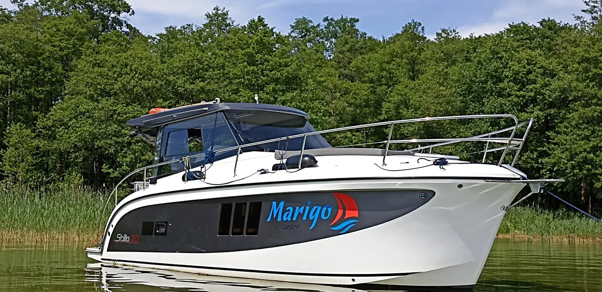

1 / 8Strona główna / Jachty motorowe / Stillo 30
Stillo 30
Jacht motorowy bez patentu, port Sztynort. W Marigo pływają 2 jednostki Stillo 30.
- 6+2 osób
- 3 zamykane kabiny
- 9,10 m
- diesel 38 KM
od 650 zł / dobakaucja zwrotna 3000 zł · sprzątanie i dezynfekcja 300 zł
Sprawdź wolne terminyWolne terminy i rezerwacja online
Wybierz termin w kalendarzu albo zarezerwuj telefonicznie: 691 612 066, mailowo: biuro@marigo.pl.
Rezerwacja przez system online Yacht CMS jest jednoznaczna z zawarciem umowy czarterowej dostępnej w panelu użytkownika i akceptacją Regulaminu rezerwacji online oraz polityki zwrotów Marigo Czarter.
Ile kosztuje rejs Stillo 30
Policz orientacyjny koszt z cennika. Wiążąca jest cena w umowie czarterowej.
W sezonie (12.06 - 1.09) jachty motorowe wynajmujemy tylko na pełne tygodnie, niedziela-niedziela. Wybierz 7 lub 14 dób.
Do tego kaucja zwrotna 3000 zł i paliwo (spalanie ok. 3 l/h). Rabaty, np. 10% przy rezerwacji 7 dni do 20.06 lub od 29.08, potwierdza biuro; rabaty nie łączą się.
Sprawdź wolne terminyDla kogo jest Stillo 30
Stillo 30 to polski jacht motorowy z rocznika 2019, z trzema zamykanymi kabinami dwuosobowymi i przestronną mesą. Dwa stery strumieniowe, dziobowy i rufowy, ułatwiają manewry w porcie. Sprawdza się przy rodzinnych wakacjach, rejsie trzech par i spokojnym zwiedzaniu Mazur bez gonienia kilometrów.
Najwygodniej płynie się w 6 osób dorosłych; dwoje dzieci zmieści się dodatkowo, ale przy dłuższym rejsie warto dobrze zaplanować bagaże.
Film z wnętrza Stillo 30 na YouTube| 2 osoby | Bardzo komfortowo, dużo przestrzeni |
|---|---|
| 4 osoby | Idealnie na spokojny, wygodny rejs |
| 6 osób dorosłych | Najlepszy pełny układ kabin |
| 6 dorosłych + 2 dzieci | Możliwe, trzeba dobrze zaplanować bagaże |
| 8 dorosłych | Mniej komfortowo przy dłuższym czarterze |
Wyposażenie
- Ogrzewanie Webasto
- Ciepła woda, bojler 30 l
- WC morskie elektryczne, prysznic
- Lodówka elektryczna
- Kuchenka dwupalnikowa, zlewozmywak
- Naczynia, zastawa, sztućce
- Ekspres do kawy
- Ster strumieniowy dziobowy i rufowy
- Echosonda, ploter nawigacyjny
- Radio CD/MP3, TV
- Gniazda 12 V (4) i 230 V (4)
- Ładowarka automatyczna, przedłużacz
- Stolik kokpitowy
- Nowe materace kokpitowe i dziobowe
- Nowa tapicerka wewnątrz
- 8 kamizelek ratunkowych i koło
- 2 kotwice z linami po 25 m
- 3 cumy, 6 odbijaczy, bosak
- Ubezpieczenie jachtu
Dane techniczne
| Liczba osób | 6+2 |
|---|---|
| Koje | 4 podwójne: dziobowa, 2 rufowe zamykane, 1 rozkładana w mesie |
| Długość / szerokość | 9,10 m / 3,25 m |
| Zanurzenie | 0,50 m |
| Masa | 4250 kg |
| Silnik | stacjonarny diesel 38 KM, ok. 3 l/h |
| Zbiorniki | woda 210 l, paliwo 150 l, fekalia 60 l |
| Rocznik | 2019 |
| Uprawnienia | bez patentu |
| Wydanie / zdanie | 16:00-20:00 / 8:00-10:00 |
Inne jachty motorowe

Futura 36 High Line
Jacht motorowy
- Port Sztynort
- 6-8 osób
- diesel 45 KM
- bez patentu*
od 850 zł / dobaSzczegóły

Futura 40 Grand Horizon
Jacht motorowy
- Port Sztynort
- 6-8 osób
- diesel 65 KM
- bez patentu*
od 990 zł / dobaSzczegóły
* bez patentu po przedstawieniu referencji z wcześniejszego czarteru jachtem z silnikiem.
Pytania o Stillo 30?
- Telefon
- 691 612 066
- biuro@marigo.pl
- Port i biuro
- Sztynort Duży 11
11-600 Węgorzewo - Godziny
- Pon-Niedz 8:00-20:00